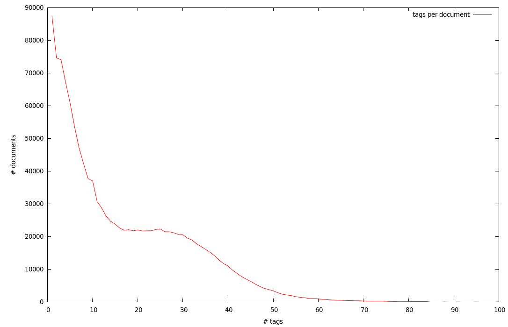
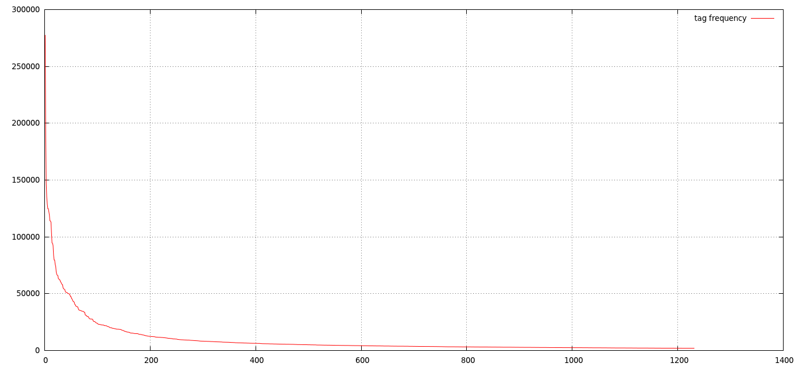

Here is the dataset I've got by crawling del.icio.us. Details follow.
First, I set up a script which reads del.icio.us' news feeds. The script run for about 1.5 months, gathering approx 1.3M tags. The problem with del.icio.us' news feeds is that they only contain data about the first time a user tags a document, so the majority of data is lost.
The second step was to take every single document in the downloaded data and simply download all its tags, along with the users who tagged it and the timestamps of the tagging event. This process took about a week using ten different machines.
| 1280686 | documents |
| 21408652 | total tags (16.7 tags per document on average) |
| 1205958 | unique tags |
| 491702 | users |
| 7034524 | tagging events |
A chart showing the distribution of number of tags per document:

The 30 most frequent tags:
| Frequency | Tag |
|---|---|
| 277414 | design |
| 195461 | blog |
| 147274 | tools |
| 135187 | inspiration |
| 129119 | imported |
| 124871 | tutorial |
| 124798 | programming |
| 122118 | art |
| 119211 | webdesign |
| 114229 | reference |
| 113939 | education |
| 113082 | software |
| 103713 | video |
| 94744 | web |
| 94365 | music |
| 92504 | photography |
| 83826 | development |
| 79686 | howto |
| 79615 | resources |
| 75723 | linux |
| 74114 | javascript |
| 69075 | free |
| 67085 | recipes |
| 66254 | via:packrati.us |
| 66108 | shopping |
| 63386 | business |
| 62953 | food |
| 62458 | research |
| 62145 | science |
| 60547 | technology |
A chart showing the raw frequency of tags. For readability the chart is cut, showing only frequencies >>2000.

<tags t="1229008773" u="gregloby" href="005cb474bfc10f41036b543f042ae791"> <t>jquery</t> <t>webdesign</t> <t>navigation</t> </tags>Every tags tag represent a tagging event: "a user has tagged a document with zero or more tags"*. The attributes of tags are:
| del.icio.us dataset (XML format, Bzipped) | 182.3 MB |
| del.icio.us dataset corpus (for Distributional Semantics, see below, Bzipped) | 53.2 MB |
Word Space Models were built from the del.icio.us dataset. The idea is treating the tags associated to a document as a document itself, made by just the (randomly ordered) list of tags. In this way a corpus of "documents" is created which can tehn be used for exploring aspects of the del.icio.us folksonomy using methods from NLP such as Distributional Semantics.
So far two models were build, namely a LSA model (100 dimensions) and a Random Indexing model (4000 dimensions). Both models were made with the Semantic Space package.
If you intend to use this data for research, please cite the following article:
Valerio Basile, Silvio Peroni, Fabio Tamburini, Fabio Vitali (2015)
Topical tags vs non-topical tags: Towards a bipartite classification?
Journal of Information Science.
@article{basile_topical_2015,
title = {Topical tags vs non-topical tags: {Towards} a bipartite classification?},
volume = {41},
url = {http://dx.doi.org/10.1177/0165551515585283},
doi = {10.1177/0165551515585283},
number = {4},
journal = {J. Information Science},
author = {Basile, Valerio and Peroni, Silvio and Tamburini, Fabio and Vitali, Fabio},
year = {2015},
pages = {486--505},
file = {55a4f9eb08ae81aec91327f8.pdf:files/253/55a4f9eb08ae81aec91327f8.pdf:application/pdf}
}
{kind=link}
{kind=link}